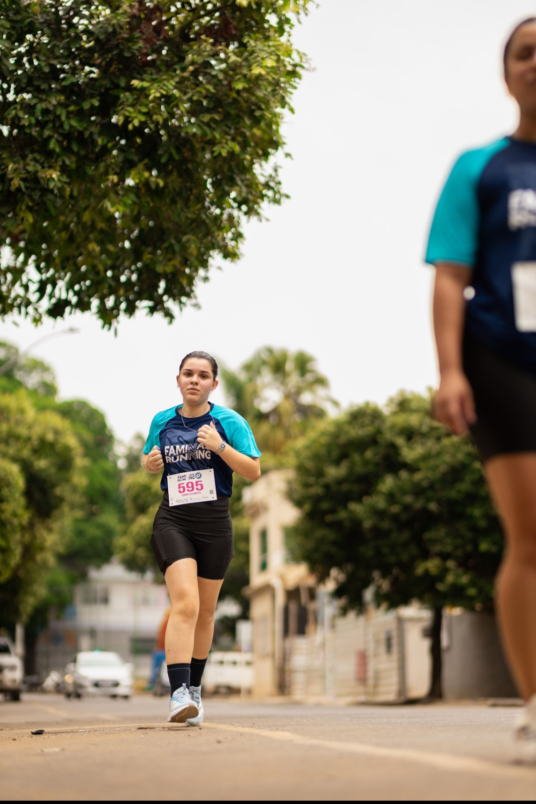

2. A importância da corrida para a saúde

A corrida é uma atividade física que traz diversos benefícios para o corpo e para a mente. Além de ajudar a melhorar o condicionamento físico, ela contribui para a saúde do coração, fortalece os músculos e melhora a resistência do organismo.
Correr também pode ajudar a aliviar o estresse, melhorar o humor e proporcionar momentos de tranquilidade. Não é necessário começar correndo longas distâncias: cada pessoa pode respeitar seu próprio ritmo e evoluir aos poucos.
3. Benefícios da corrida

Saúde do coração
Ajuda a melhorar a circulação sanguínea e fortalece o sistema cardiovascular.

Saúde mental
Ajuda a aliviar o estresse, melhorar o humor e proporcionar bem-estar.

Fortalecimento
Contribui para fortalecer músculos, ossos e melhorar a resistência física.

Mais disposição
Pode melhorar a qualidade do sono e aumentar a disposição para as atividades diárias.
4. Minha experiência com a corrida

A corrida faz parte da minha maneira de cuidar da saúde e do bem-estar. Por meio dessa atividade, posso perceber a importância de movimentar o corpo, cuidar da mente e ter hábitos mais saudáveis.
Quero mostrar que não precisamos ser atletas profissionais para praticar atividades físicas. O importante é começar, respeitar nossos limites e entender que cada passo representa um cuidado com a nossa saúde.
5. Corrida e qualidade de vida
A prática de atividades físicas é fundamental para uma vida mais saudável. A corrida é uma forma simples de movimentar o corpo, aproveitar espaços ao ar livre e desenvolver hábitos positivos.
Além dos benefícios físicos, ela também proporciona momentos de superação, disciplina e autoconhecimento.


6. Uma mensagem para incentivar as pessoas
Cada Passo Conta!
Cuide de você. Movimente-se.
Viva melhor!
Sua saúde merece atenção todos os dias. Comece no seu ritmo e descubra os benefícios de uma vida mais ativa.